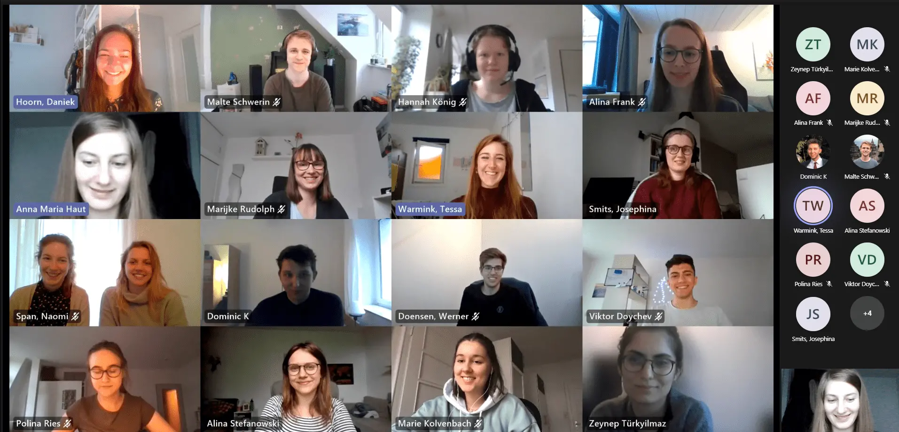
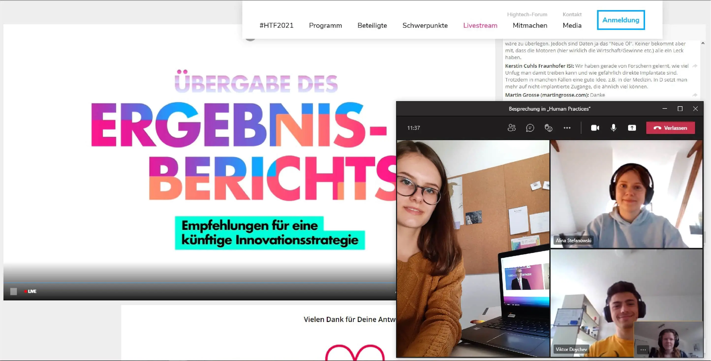
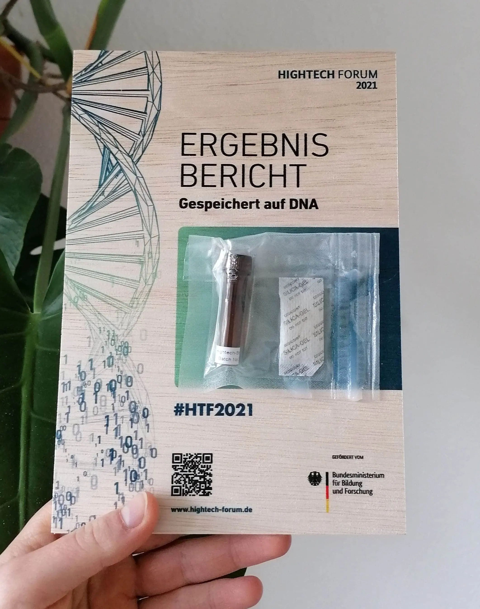
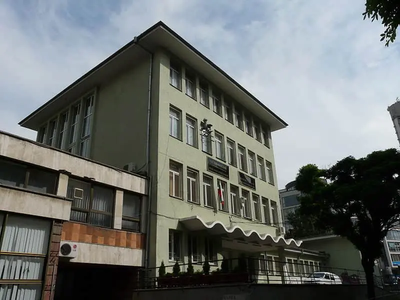

Fact of the week
With the social media posts called “fact of the week”, we want to explain complex topics in synthetic biology in a simple way and thus engage in science communication. The aim is to get people interested in the topics addressed, some of which are special. The following topics were covered:
- Biotechnology
- CRISPR/Cas9
- Bioflavors
- Escherichia coli
- Genetic code
- Bioluminescence
- Biolistics
- Bioleaching
- Astrobiology
- Microbial nanowires
- 3D Bioprinting
Collaboration with iGEM Eindhoven
In March we wrote iGEM Tue a message if they would like to meet sometime. In our first meeting, we decided to cooperate in the field of science communication. At first, we collected easy experiments for younger children and made lesson plans and PowerPoint presentations in English, German and Dutch for each experiment. We conducted them in elementary schools in both countries. In Germany, we paid a visit to the Don-Bosco-School in Wolsfeld and performed two experiments with a small group of students.
First, we briefly introduced iGEM and our team and explained what kind of project we are working on in a way that was appropriate for children. Then we went straight into the first experiment and built a lava lamp using simple home remedies. All materials were provided by our team. The elementary school students were able to take all information from a presentation we created and were able to perform every step by themselves. The second experiment was to separate the pigments of different felt-tip pens to demonstrate the mixture of colors. Finally, we had a short discussion with the students and made sure that they learned something from the experiments. Due to the enthusiasm of the students and on our part, as well as good experiences in the schools on the Dutch and German side, we started a call on slack to collect more school experiments. The iGEM teams Bielefeld, Boku-Vienna, KU Leuven, Unizar, and Wageningen_UR send us their writings and we put them all together into one big handbook. It should make doing experiments with pupils easier for the teacher or other iGEM teams. They just need to choose from a collection of experiments.
Here you can find the lesson planand
here our Presentation we used at school.
Figure 1: Picture of the meeting with Eindhoven
Welcome Week
With the start of the new semester, our university allowed us to present our project and the iGEM competition to the newly arrived international students. We got a booth, where we did the DNA extraction as an icebreaker to discuss with the students about our project. This was interesting because most of them do not know much about synthetic biology and working with DNA. They had a lot of fears, like synthesizing DNA would be dangerous. So we cleared a lot of prejudices up and arouse interest in biology.
High-Tech Forum 2021
On July 21st, a few members of our team met online to watch the live stream of the results report of the „High-Tech-forum 2021“ by the German federal ministry of education and research. In a 3 hour long conference, scientists, people from the economy, and politicians talked about several topics regarding innovative technologies. We heard speeches, dealing with the technological independence of Germany and/or Europe and listened to debates about citizen participation in the digital world. A main part of the conference dealt with strengthening innovative forces in society and coming up with sustainable solutions for problems that affect us all. It is important for Germany – or even humankind – to maintain crisis-proof technological security of supply. We very much appreciated that politics start to recognize the problematics of digital storage insecurity and taking steps into a new direction with innovative ideas like DNA data storage. One goal of the High-Tech forum was the advice of the German government on the convergence of bio, information, and communication technologies A transcript of the result report was stored on DNA beforehand in cooperation with the research cluster MOSLAU (Molecular Storage for Longterm Archiving) of the University of Marburg and handed to Anja Karliczek – Germany‘s federal research minister. More vials with the synthetic DNA were distributed to the public as well as part of a research program by the University of Marburg. The DNA vials are stored in people‘s homes for 5 years and then sent back to the research group. A few people from our team managed to sign up for the vials and received them a few days later. Being very excited about this we contacted the group leader of MOSLA Dominik Heider in Marburg and had an informative meeting with him and Anke Becker about our project and DNA data storage as such. You can read more about this (see Meeting with Dominik Heider and Anke Becker).

Figure 2: Four members of our team attending the High-Tech-forum

Figure 3: The results report stored in DNA
Welcome Week
With the start of the new semester, we presented our project and the iGEM competition to the newly arrived international students at RWTH Aachen. In our booth, we first raised interest for our project by conducting a simple DNA extraction experiment with the newcoming students. We then had an exiting detabte with them about our project.``` Since they did not know a lot about synthetic biology, they had multiple concerns, for example that synthesizing DNA could be dangerous. So we cleared up a lot of prejudices up and arouse interest in biology.
Article in Magazine "BIOSpektrum"
As part of science communication, we also reached in an article at the magazine "BIOSpektrum", where we explained our project. BIOSpektrum is a magazine with a scientific audience. This allowed us to explain our topic, the enzymatic DNA synthesis for DNA data storage, in more detail. Even though some readers might have already heard about this topic our approach is completely unique.
techdive Podcast
Podcasts are becoming more and more popular, especially among young people, so we could not miss the opportunity of reaching out to that audience. Hence we participated in the podcast "techdive", which features students’ thesis’ and student project groups to present them to a broader audience. It was a challenging experience to explain the topic of DNA synthesis and storage to someone who is not familiar with the biological basics, but we ultimately could simplify it to the point where listeners from every background, scientific or not, could understand it.
DNA Extraction Kits for Students
At the beginning of iGEM, we had the wish to get into contact with students from different schools and bring them in touch with the field of biotechnology. Therefore, we came up with a project with which we can inspire them and show them the fascinating properties of DNA. Starting with this idea, we put together a DNA extraction kit. The kit contained material for 16 students: Test tubes, filters, meat tenderizer, isopropyl alcohol, dishwashing detergent, and more. The only thing that was not included was a strawberry. We chose to do the extraction with strawberries since they are octoploid and easy to squish what simplifies the extraction. We wrote detailed instructions for the students and the teacher, also providing them with background information about DNA and the process of extracting it from cells. It was also important for us to include safety instructions such as wearing protective goggles when working with isopropyl alcohol.
We packed four customized iGEM Aachen boxes for different schools. One was even sent to the „Deutsche Schule Moskau“ in Moscow, Russia. The other 3 boxes were sent to schools in different parts of Germany.
A graduating class of „Domschule Schleswig“ in Schleswig, Schleswig-Holstein in northern Germany experimented together with their teacher and talked to us about the extraction in a Zoom meeting afterward. In this meeting, Viktor and Anna also got the opportunity to present our project, iGEM, and biotechnology as a course of studies. Especially the last point was important to us because biotechnology is still a rather small unknown subject. But as it can be seen from iGEM, biotechnology is undoubtedly a science of the future. We hope that our science communication projects will encourage a few more students to study in the field of biotechnology.
Gladly, we were able to visit two schools near the RWTH Aachen. Matthias and Hannah visited a biology A-level course at Viktoriaschule Aachen. They gave a short introductory presentation on iGEM, biotechnology (especially studying biotechnology at RWTH), and the experiment. Afterward, the students had time to do the extraction of DNA from strawberries with the kit. We were happy to answer questions and help occasionally with small things. However, most of the students worked independently and helped each other out. In the following lesson, the teacher continued with the topic and discussed the background details of DNA properties with the students using our provided material. A similar program was carried out at St.-Bernhard-Gymnasium in Willich, western Germany by Marie L. and Marijke. Two 11th classes were introduced in DNA extraction with the short presentation. Subsequently, the teachers gave us 1,5 hours to do the experiments with the students. Therefore, we had enough time to answer all their questions regarding biotechnology and DNA. We were happy to hear that a few students told us that we sparked their interest in synthetic biology!
Overall, we were delighted with our education project. Our goal was to promote knowledge and fascination for biotechnology to people who are going to start studying or working in the next two years. We wanted to show, that synthetic biology is one of the most important aspects of the development of science. The simple but illustrative experiment gave students a better understanding of cells and cleared up prejudices against DNA. When we told them about our project in the beginning, they were often scared working with DNA would be dangerous but afterward, they were fascinated by the clearly visible DNA extract.
Carrer Guidance Event in Bulgaria
In our team, we believe that iGEM is about never ceasing to learn and therefore feel responsible for educating young people. Therefore, Viktor participated in a career guidance event organized every year at his school in Bulgaria and gave a presentation about the branches of biotechnology, the bachelor's degree program at RWTH Aachen University, and the career opportunities. He then joined an experienced chemical engineer in answering students' questions about studying and working in the field. А couple of students were intrigued about the world of biotechnology and connected with Viktor for further information about the bachelor program. Thus, we believe that we helped young people to find their passion and hope that one day we will work side by side on a project that may change the world.

Figure 4: 91. Deutsches Gymnasium Sofia.